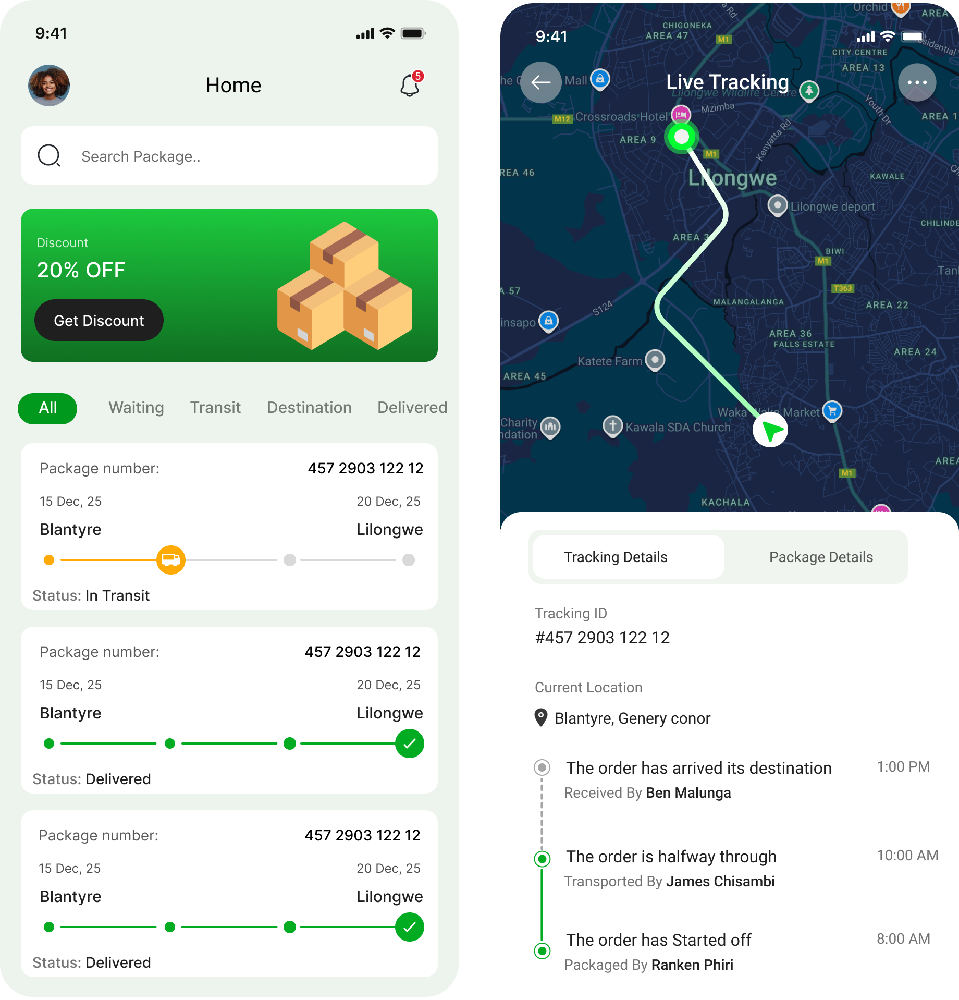
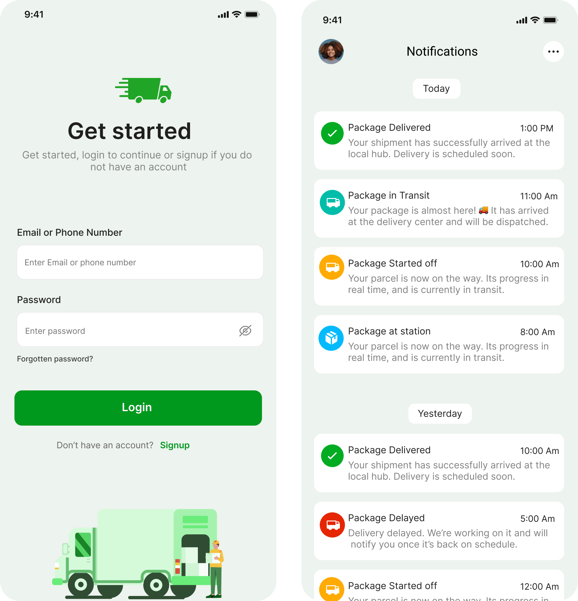
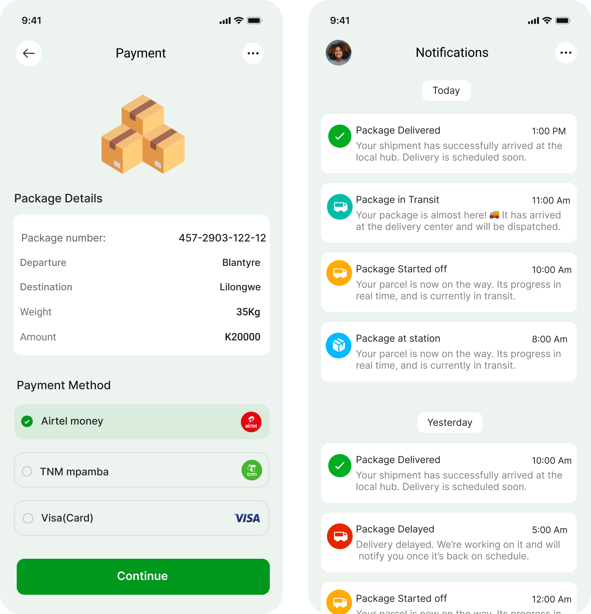
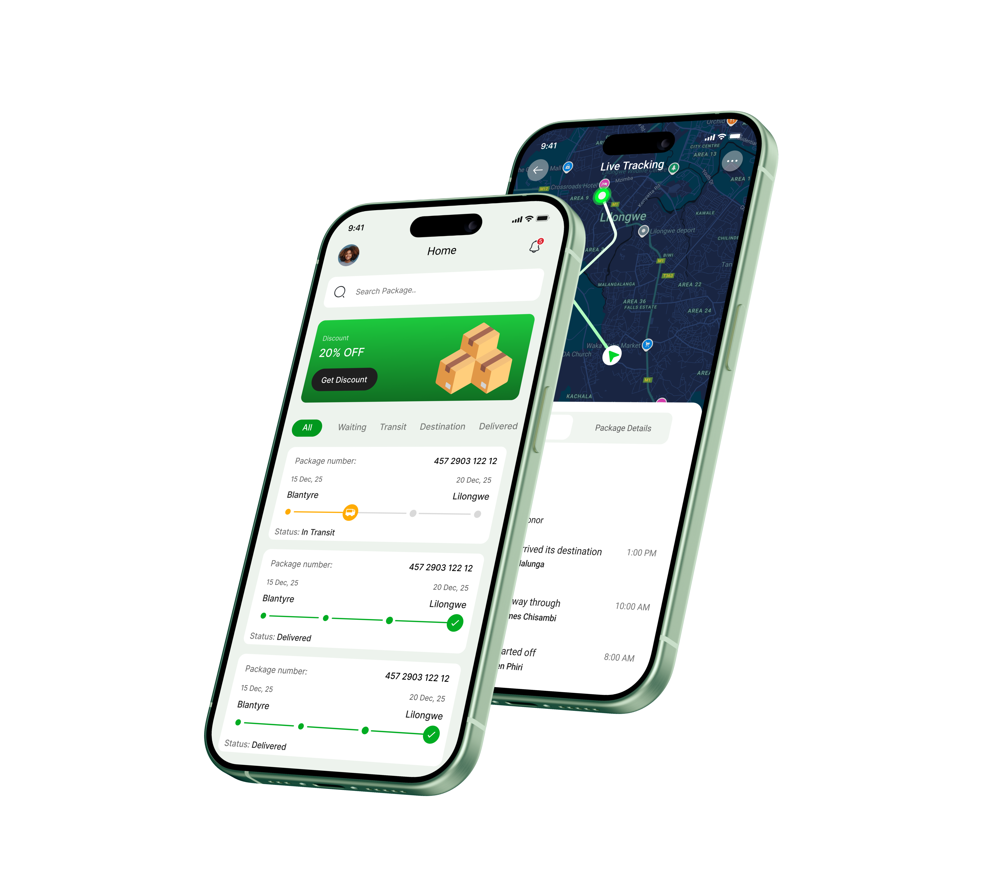
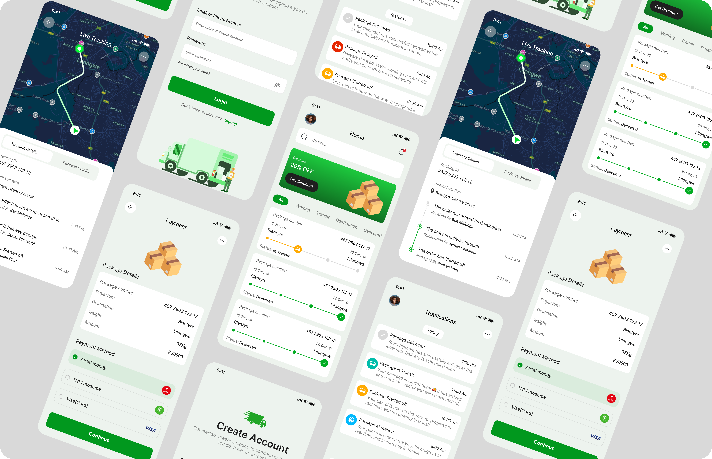

Case Study
Project Overview
Smart Courier App is a mobile app concept designed for CTS Courier, a Malawian courier company. The prototype was created as part of a pitch to help the company improve its parcel handling, delivery visibility, customer communication, and overall service reliability.
At the time, the company was facing service challenges such as lost packages, misplaced parcels, delayed deliveries, broken items, poor tracking visibility, and limited customer communication. The goal of this concept was to show how a digital courier system could help CTS modernise its delivery experience for both internal teams and customers.
The app allows users to track parcels in real time, view delivery progress, receive notifications, make payments, and access package details directly from their phones.
My Role
I worked on understanding the company's delivery challenges, identifying user pain points, mapping the parcel tracking journey, and designing a clean mobile experience that could support both customers and courier operations.
Problem
CTS Courier had a manual and unreliable parcel tracking experience. Customers had limited visibility after sending a package, which created frustration and mistrust.
Key problems identified:
- Customers could not easily track where their parcels were.
- Packages were sometimes lost, misplaced, delayed, or damaged.
- Customers had to call or physically follow up for delivery updates.
- Payment and delivery confirmation were not well integrated.
- The company lacked a modern digital touchpoint to improve trust and accountability.
Solution & Objectives
The solution was a mobile app prototype that introduced a more transparent parcel tracking and delivery experience.
The main objectives were to:
- Allow customers to track parcels using a package number.
- Show real-time parcel movement from departure to destination.
- Provide delivery status updates — Waiting In Transit At Station Delayed Delivered.
- Send notifications for important delivery milestones.
- Allow users to pay through Airtel Money, TNM Mpamba, or card.
- Reduce customer uncertainty by showing package details, delivery timelines, and current location.
- Help CTS improve accountability and reduce complaints caused by lost or delayed packages.
Target User Persona
Thandiwe regularly sends clothing items and small business packages between Lilongwe, Blantyre, and other districts. She depends on courier services to keep her customers happy, but she often becomes frustrated when she cannot track her parcels or confirm delivery on time.
Goals
- Track parcels without calling the courier office.
- Know when a package has arrived or is delayed.
- Pay for courier services quickly.
- Receive proof that a package has been delivered.
- Avoid losing customer trust because of courier delays.
Pain Points
- No real-time parcel visibility.
- Delayed communication from courier staff.
- Fear of packages being misplaced or damaged.
- Wasting time following up through phone calls.
- Lack of clear delivery confirmation.
User Workflow
The workflow was designed to be simple and familiar, especially for users who may not be highly technical.
Wireframe & Structure
Before creating the final UI, the app structure was planned around the most important courier actions: tracking, payment, notifications, and package details.
Core screens:
- Login screen — Simple account access using email or phone number.
- Home screen — Package search, delivery categories, and recent package cards.
- Live tracking screen — Map-based parcel movement with tracking details.
- Notifications screen — Delivery updates grouped by today and yesterday.
- Payment screen — Package summary and payment method selection.
The wireframe approach focused on making the app easy to scan. Important parcel information such as package number, route, status, and delivery progress was kept visible and easy to understand.
UI Design Direction
The visual design used a clean logistics-inspired interface with a strong green accent colour to represent movement, delivery, progress, and trust.
Design choices:
- Soft rounded cards for package information.
- Progress indicators to show delivery stage.
- Status colours to separate Delivered In Transit Delayed Started Off packages.
- A map-based tracking screen for better delivery visibility.
- Simple local payment options — Airtel Money and TNM Mpamba.
- Clear notification cards to help users understand parcel updates quickly.
Results
Since this was a concept/prototype created for pitching, the main result was a clear product vision showing how CTS Courier could digitalise its delivery service.
The prototype demonstrated how the company could:
- Reduce customer complaints caused by poor parcel visibility.
- Improve customer trust through real-time tracking.
- Create a better delivery confirmation process.
- Make payments easier through mobile money integration.
- Improve accountability across parcel movement stages.
- Present itself as a more modern and reliable courier service.
Challenges
One of the main challenges was designing for a courier environment where many processes may still be manual or semi-digital. The app had to feel modern while still being realistic for a Malawian courier company.
- Simplifying complex delivery stages into clear customer-facing statuses.
- Designing tracking screens that felt useful without overwhelming users.
- Balancing customer needs with internal courier operations.
- Making payment options feel familiar and locally relevant.
- Creating a polished prototype that could communicate value quickly during a business pitch.
Reflection
This project helped me think beyond visual design and focus more on how product design can solve operational problems. The biggest lesson was that a courier app is not just about tracking parcels — it is about trust, accountability, communication, and customer confidence.
Through this concept, I learned how to turn service weaknesses into product opportunities. Lost packages, poor updates, and delayed communication became design opportunities for real-time tracking, delivery notifications, payment integration, and clearer package visibility.
The project also strengthened my ability to design for local business contexts in Malawi, where digital products must be simple, practical, and directly connected to business improvement.